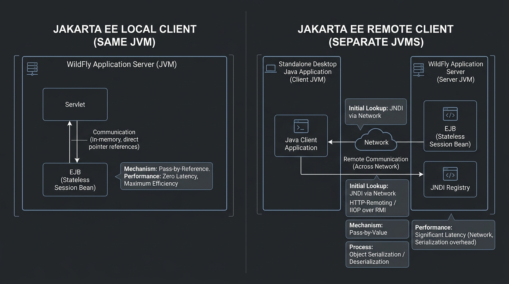

<title>Session 6 — Local and Remote Clients, Explained Slowly</title>
<meta name="viewport" content="width=device-width, initial-scale=1">
<meta name="description" content="Session 6, written for people who have never written a client for a bean. How a client actually gets a bean — @EJB and @Local from inside, @Remote and a JNDI lookup from outside — pass-by-reference vs pass-by-value, serialization, and why session beans have no identity.">
<link rel="stylesheet" href="assets/css/styles.css">
<script>window.PAGE = "s06";</script>

<main class="page">

  <h1>Session 6 · Local and Remote Clients, Explained Slowly</h1>
  <p class="lede">Something has to <em>call</em> a bean. Whoever calls it is the bean's
    <strong>client</strong>. If the caller runs in the same Java process as the bean, it is a
    <strong>local client</strong>. If it runs in a completely different program — another server, a
    desktop app, a script on someone else's machine — it is a <strong>remote client</strong>. That one
    difference decides how you get your hands on the bean, how your arguments travel, and how fast the
    call is. This page teaches it from zero.</p>

  <div class="callout callout--key"><span class="callout__i">🎯</span>
    <div class="callout__b"><b>Four promises before we start</b>
      <ol style="margin:.6rem 0 0;padding-left:1.2rem">
        <li><strong>No jargon without a translation.</strong> Every new word — client, JNDI, stub,
          serialization, handle — gets a plain-English box the moment it appears.</li>
        <li><strong>Nothing is assumed.</strong> You have never written a client for a bean and never
          done a JNDI lookup. We start there, not after it.</li>
        <li><strong>You can try everything here.</strong> Press <em>Run</em> and watch a real remote
          call play out.</li>
        <li><strong>This page keeps a promise.</strong> Session 1 told you “never write
          <code>new</code> on a bean — real clients use <code>@EJB</code> or JNDI, see Session 6.”
          That “see Session 6” is this page.</li>
      </ol>
    </div>
  </div>

  <div class="callout callout--key"><span class="callout__i">🔗</span>
    <div class="callout__b"><b>The promise Session 1 made: how do you actually get a bean?</b>
      Session 1 and 2 left two questions open on purpose: <em>if you never call <code>new</code>, where
      does a bean come from?</em> and <em>what is a JNDI lookup?</em> Both are answered here, in full,
      in Part 2 and Part 3. If the words <code>@EJB</code>, <code>@Stateless</code> or “never write
      <code>new</code>” feel new, read
      <a href="session-01-02-intro-and-beans.html">Session 1 &amp; 2</a> first — this page builds on
      it.</div>
  </div>

  <h2>What you will be able to do by the end</h2>
  <p>Not the manual's bullet list — just six things, in plain words:</p>
  <div class="tablewrap"><table>
    <thead><tr><th>By the end you can…</th><th>Where it is taught</th></tr></thead>
    <tbody>
      <tr><td>Say what a “client” of a bean is, and pick out whether it is local or remote</td><td>Part 1</td></tr>
      <tr><td>Explain why a local call hands over the <em>real object</em> and a remote call posts a <em>copy</em></td><td>Parts 1 &amp; 3</td></tr>
      <tr><td>Get a bean from inside your own application with <code>@EJB</code> and <code>@Local</code></td><td>Part 2</td></tr>
      <tr><td>Get a bean from a separate program with <code>@Remote</code> and a JNDI lookup</td><td>Part 3</td></tr>
      <tr><td>Write and run a standalone client that calls a bean on another machine</td><td>Part 3</td></tr>
      <tr><td>Explain why a session bean has no identity, and why older material about <code>Handle</code> does not apply today</td><td>Part 4</td></tr>
      <tr><td>Answer the exam-style questions on this topic</td><td>Checkpoints &amp; the quiz</td></tr>
    </tbody>
  </table></div>

  <div class="callout"><span class="callout__i">📖</span>
    <div class="callout__b"><b>How to read this page</b>
      The small labels on the left of each block tell you what kind of block it is.
      <ul style="margin:.6rem 0 0">
        <li><code>// concept</code> — an explanation to read.</li>
        <li><code>// try it</code> — press <strong>Run</strong> and experiment.</li>
        <li><code>// checkpoint</code> — a quick self-test. Answers are hidden until you ask.</li>
        <li><code>// terminal</code> — a pretend command line. Nothing touches your computer.</li>
        <li><code>// check yourself</code> — the quiz.</li>
        <li><code>// recap</code> — the one-line summary of everything.</li>
      </ul>
      Read it top to bottom the first time. It is written in the order that makes it easiest, not the
      order a textbook would use.
    </div>
  </div>

  <hr>

  <!-- =====================================================================
       PART 1 — TWO WAYS TO CALL A BEAN
       ===================================================================== -->

  <span class="eyebrow">concept</span>
  <h2>Part 1 · Two ways to call a bean</h2>

  <h3>1.1 A bean is a very shy object</h3>
  <p>Session 1 left you with one hard rule: <strong>never write <code>new</code> on a bean</strong>.
    A bean you create yourself gets none of the container's services — no security, no transactions,
    no pooling.</p>
  <p>So a bean is delivered to you ready-made, by the container, and you only ever receive a
    <strong>reference</strong> to it. Everything on this page is about that one handover: where the
    reference comes from, and what it actually points at.</p>

  <h3>1.2 What counts as a “client”?</h3>
  <p>Any code that calls a bean's method is that bean's client. Nothing more complicated than that.</p>
  <div class="tablewrap"><table>
    <thead><tr><th>Who is calling</th><th>Typical shape</th></tr></thead>
    <tbody>
      <tr><td>A servlet handling a web request</td><td>A class in the same application</td></tr>
      <tr><td>One bean calling another bean</td><td>A class in the same application</td></tr>
      <tr><td>A test you run from your IDE</td><td>Usually a separate program</td></tr>
      <tr><td>A desktop app, a script, or another server</td><td>Always a separate program</td></tr>
    </tbody>
  </table></div>
  <p>The first two rows are <strong>local clients</strong>. The last two are <strong>remote
    clients</strong>. The dividing line is one question, and it is worth memorising.</p>

  <h3>1.3 The one question that decides everything</h3>
  <div class="callout callout--key"><span class="callout__i">❓</span>
    <div class="callout__b"><b>Is the caller running inside the same JVM as the bean?</b>
      <ul style="margin:.6rem 0 0">
        <li><strong>Same JVM</strong> → a <strong>local client</strong>. Share memory. Fast.</li>
        <li><strong>Different JVM</strong> (another program, another machine) → a <strong>remote
          client</strong>. Nothing is shared. Everything travels over the network.</li>
      </ul>
    </div>
  </div>
  <p>A <strong>JVM</strong> is the Java Virtual Machine — the running Java process. Two classes are
    “in the same JVM” when they are loaded and running inside the same process; they can reach into
    each other's memory directly.</p>

  <div class="callout callout--analogy"><span class="callout__i">🗣️</span>
    <div class="callout__b"><b>Analogy</b>
      Two colleagues in the same office. One leans over and hands the other their actual notebook — the
      colleague reads it, writes in it, and the very same notebook is affected. Now imagine the
      colleague has moved to another branch. You cannot hand anything over; you write on a copy and
      post it. That is the whole difference between a local and a remote client.</div>
  </div>

  <div class="plainwords"><b>In plain words</b>
    <p><strong>Local</strong> means “we are in the same building, so I can just pass you things.”</p>
    <p><strong>Remote</strong> means “you are in another building, so I must photocopy and post
      everything.” Posting is slower, and you never get the original back.</p>
  </div>

  <h3>1.4 The two doors to a bean</h3>
  <p>Because the two cases are so different, they use two different doors. This is exactly the promise
    Session 1 made you — here it is, in one table.</p>
  <div class="tablewrap"><table>
    <thead><tr><th></th><th>Door 1 — from inside the application</th><th>Door 2 — from outside it</th></tr></thead>
    <tbody>
      <tr><td><strong>How you ask</strong></td><td><code>@EJB</code> on a field</td><td>A JNDI lookup by name</td></tr>
      <tr><td><strong>What you get</strong></td><td>The container fills the field before your code runs</td><td>A <em>stub</em> — a local stand-in for the bean on the other machine</td></tr>
      <tr><td><strong>The bean's interface</strong></td><td><code>@Local</code> (or no interface at all)</td><td><strong>Must</strong> be an explicit <code>@Remote</code> interface</td></tr>
      <tr><td><strong>Taught in</strong></td><td>Part 2</td><td>Part 3</td></tr>
    </tbody>
  </table></div>
  <p>Both doors end in the same place — you hold a reference and call methods on it. Only the way it
    got there differs.</p>

  <h3>1.5 The six differences, side by side</h3>
  <p>This is the table the exam draws from. Read the two middle rows twice; they are the ones people
    get wrong.</p>
  <div class="tablewrap"><table>
    <thead><tr><th>Feature</th><th>Local Client</th><th>Remote Client</th></tr></thead>
    <tbody>
      <tr>
        <td><strong>Runtime Environment</strong></td>
        <td>Must run in the <strong>same JVM</strong> (e.g., a Servlet in the same EAR/WAR)</td>
        <td>Runs in a <strong>separate JVM</strong>, external container, or standalone machine</td>
      </tr>
      <tr>
        <td><strong>Parameter Passing</strong></td>
        <td><strong>Pass-by-Reference</strong> (direct pointer in RAM)</td>
        <td><strong>Pass-by-Value</strong> (a serialized binary copy sent over the network)</td>
      </tr>
      <tr>
        <td><strong>Execution Latency</strong></td>
        <td><strong>Nanoseconds</strong> (no marshaling at all)</td>
        <td><strong>Milliseconds</strong> (network handshake, serialization, socket I/O)</td>
      </tr>
      <tr>
        <td><strong>Interface Requirement</strong></td>
        <td><code>@Local</code> interface <strong>or</strong> No-Interface View</td>
        <td><strong>Must declare an explicit <code>@Remote</code> interface</strong></td>
      </tr>
      <tr>
        <td><strong>Object Argument Rules</strong></td>
        <td>Any standard Java class</td>
        <td>All arguments and returns must implement <code>java.io.Serializable</code></td>
      </tr>
      <tr>
        <td><strong>Mutations to Arguments</strong></td>
        <td>Changes the bean makes affect the caller's own object directly</td>
        <td>Changes affect only the bean's deserialized copy; the caller sees no change</td>
      </tr>
    </tbody>
  </table></div>

  <h3>1.6 Pass-by-reference vs pass-by-value — the heart of it</h3>
  <p>When you call a method, you hand it arguments. <em>What</em> you are handing over is the whole
    difference.</p>
  <ul>
    <li><strong>Pass-by-reference (local).</strong> You pass the location of your object in memory. The
      bean works on <em>your</em> object. If the bean calls
      <code>list.add("x")</code>, your list now has <code>"x"</code> in it.</li>
    <li><strong>Pass-by-value (remote).</strong> Your object is turned into a stream of bytes, sent
      across the network, and rebuilt as a <strong>brand-new object</strong> on the other side. The
      bean works on its copy. If it adds <code>"x"</code>, your original is untouched.</li>
  </ul>
  <p>That “turn an object into bytes and rebuild it” step has a name you will meet constantly:
    <strong>serialization</strong>. We take it apart properly in Part 3.</p>

  <div class="callout callout--analogy"><span class="callout__i">📓</span>
    <div class="callout__b"><b>Analogy</b>
      <strong>Local</strong> — you hand your colleague the actual notebook. Anything they scribble in
      it, you will see, because it is the same notebook.</div>
  </div>

  <div class="callout callout--analogy"><span class="callout__i">📠</span>
    <div class="callout__b"><b>Analogy</b>
      <strong>Remote</strong> — you photocopy a page and post the copy to the other branch. They may
      scribble all over the photocopy; your original page at home is exactly as you left it. This is
      why a remote method can never fill in one of your objects for you.</div>
  </div>

  <div class="plainwords"><b>In plain words</b>
    <p>Local passes the <em>real thing</em>. Remote passes a <em>copy</em>.</p>
    <p>So if the bean changes the object you handed it, a local caller sees the change and a remote
      caller does not. If you need a value back from a remote bean, the bean must <strong>return</strong>
      it — it cannot reach back and change your variable.</p>
  </div>

  <h3>1.7 The price you pay for crossing the network</h3>
  <p>A local call is, at the scale your program cares about, free. A remote call is not.</p>
  <div class="tablewrap"><table>
    <thead><tr><th>Step that has to happen</th><th>Local call</th><th>Remote call</th></tr></thead>
    <tbody>
      <tr><td>Find the bean</td><td>Already in memory</td><td>Connect over the network</td></tr>
      <tr><td>Turn arguments into bytes</td><td>Not needed</td><td>Every argument, every time</td></tr>
      <tr><td>Send them</td><td>Not needed</td><td>Socket I/O between machines</td></tr>
      <tr><td>Run the method</td><td>Instant</td><td>Instant</td></tr>
      <tr><td>Send the answer back</td><td>Not needed</td><td>Serialize, send, rebuild</td></tr>
      <tr><td><strong>Total</strong></td><td><strong>Nanoseconds</strong></td><td><strong>Milliseconds</strong></td></tr>
    </tbody>
  </table></div>

  <div class="plainwords"><b>In plain words</b>
    <p>A local call is a whisper across a desk. A remote call is a letter: write it, seal it, post it,
      wait, read the reply, post the reply back.</p>
    <p>One letter is fine. Ten thousand letters a minute is not — and that is exactly what decides the
      next rule.</p>
  </div>

  <h3>1.8 Which one should you use?</h3>
  <div class="callout callout--key"><span class="callout__i">⚡</span>
    <div class="callout__b"><b>Performance rule of thumb</b>
      Beans that talk to each other <strong>frequently</strong> — for example an <code>OrderBean</code>
      calling a <code>TaxBean</code> thousands of times a minute — should <strong>always use Local
      interfaces</strong>. Remote overhead will drag the whole system down. Reserve
      <code>@Remote</code> strictly for genuinely separate systems and external integrations.</div>
  </div>

  <div class="callout callout--mistake"><span class="callout__i">⚠️</span>
    <div class="callout__b"><b>The mistake everybody makes once</b>
      Making everything remote “because it is more flexible.” Every one of those chatty calls now pays
      the letter-writing cost. If two beans live in the same application and call each other in a loop,
      they must be local. Use remote only when the caller really is in another program.</div>
  </div>

  <figure>
    
    <figcaption><b>Memory vs. network:</b> a local call runs inside RAM in nanoseconds; a remote call
      serializes its arguments and travels the wire in milliseconds. Same method, very different
      journey.</figcaption>
  </figure>

  <div class="checkpoint"><b>Checkpoint 1 · before you move on</b>
    <p>Answer out loud, in your own words. Then open the answers.</p>
    <ol>
      <li>What is a bean's “client”?</li>
      <li>Which single question tells you whether a client is local or remote?</li>
      <li>Why can a remote method not change an object that you passed it?</li>
    </ol>
    <details>
      <summary><strong>Show answers</strong></summary>
      <ol>
        <li>Any code that <strong>calls the bean's methods</strong>. A servlet, another bean, a test, or
          a separate program — whatever makes the call is the client.</li>
        <li><strong>Is it running in the same JVM as the bean?</strong> Same JVM → local. Different JVM
          → remote.</li>
        <li>Because a remote call is <strong>pass-by-value</strong>: your object is serialized, sent, and
          rebuilt as a <em>copy</em> on the other side. The bean changes its copy, not your
          original.</li>
      </ol>
    </details>
  </div>

  <hr>

  <!-- =====================================================================
       PART 2 — CALLING A BEAN FROM INSIDE THE SAME BUILDING
       ===================================================================== -->

  <span class="eyebrow">concept</span>
  <h2>Part 2 · Calling a bean from inside the same building</h2>
  <p>This is the everyday case — 95% of your code. You are inside the application, the container is
    already looking after the bean, so all you do is ask for it.</p>

  <h3>2.1 Door 1: <code>@EJB</code> — delivered to your field</h3>
  <p>You write the field and leave it empty. Before your code ever runs, the container fills it in with
    a ready-to-use bean. That is the whole mechanism Session 1 promised you.</p>

  <div class="code-head">WhoShoutsServlet.java — a local client</div>
  <pre><code>@WebServlet("/shout")
public class WhoShoutsServlet extends HttpServlet {

    @EJB                                   // ← the container fills this in for us
    private ShouterBean shouter;

    @Override
    protected void doGet(HttpServletRequest req, HttpServletResponse resp) throws IOException {
        resp.getWriter().println(shouter.shout("hello"));
    }
}</code></pre>

  <div class="callout callout--tip"><span class="callout__i">💡</span>
    <div class="callout__b"><b>The one thing to notice</b>
      There is no <code>new</code> anywhere. You declared the field; the container delivered the object.
      You are not even told <em>which</em> instance you got — a bean from the pool, or a brand-new one.
      The container decides, and you never need to know.</div>
  </div>

  <div class="plainwords"><b>In plain words</b>
    <p><code>@EJB</code> means “container, put a bean in this field for me.” This is called
      <strong>injection</strong> — the container injects the object into your field.</p>
    <p>It only works when the caller is <strong>inside</strong> the application, so the container can
      see both the field and the bean. For a separate program, you need the other door.</p>
  </div>

  <h3>2.2 A local bean can be exposed in three ways</h3>
  <p>Before a local client can call your bean, the bean has to say what its local view looks like. There
    are three standard ways to do it, and you will meet all three.</p>
  <div class="tablewrap"><table>
    <thead><tr><th>Way</th><th>What you write</th><th>What the client can call</th></tr></thead>
    <tbody>
      <tr>
        <td><strong>No-Interface View</strong></td>
        <td>No interface at all — just the bean class</td>
        <td>All of the bean's public methods, automatically</td>
      </tr>
      <tr>
        <td><strong>Explicit <code>@Local</code> on an interface</strong></td>
        <td>An interface marked <code>@Local</code>; the bean implements it</td>
        <td>Only the methods listed on that interface</td>
      </tr>
      <tr>
        <td><strong>Class-level declaration</strong></td>
        <td><code>@Stateless @Local(ServiceLocal.class)</code> on the bean</td>
        <td>The methods of the named interface</td>
      </tr>
    </tbody>
  </table></div>

  <div class="callout callout--mistake"><span class="callout__i">⚠️</span>
    <div class="callout__b"><b>A No-Interface View is local-only — always</b>
      The no-interface view is available <strong>exclusively to local clients</strong>. A remote client
      can never use it, because a remote caller needs a named interface to look up by JNDI. The moment
      the caller is in another JVM, you must write an explicit <code>@Remote</code> interface. That is
      Part 3.</div>
  </div>

  <h3>2.3 Worked example: a prime number generator</h3>
  <p>Three small files, one job: a web page asks for every prime number up to a limit, and a bean
    works them out. Read them in order — the story runs interface → bean → client.</p>

  <div class="code-head">1. PrimeCalculatorLocal.java — the local interface</div>
  <pre><code>package com.demo.local;

import jakarta.ejb.Local;

@Local
public interface PrimeCalculatorLocal {
    String getPrimesUpTo(int limit);
}</code></pre>

  <div class="callout callout--tip"><span class="callout__i">💡</span>
    <div class="callout__b"><b>The one thing to notice</b>
      <code>@Local</code> on the interface is a promise to the container: “this view is only ever called
      from inside this application.” That promise is what lets the container pass references instead of
      copies.</div>
  </div>

  <div class="code-head">2. PrimeCalculatorBean.java — the stateless bean</div>
  <pre><code>package com.demo.local;

import jakarta.ejb.Stateless;

@Stateless
public class PrimeCalculatorBean implements PrimeCalculatorLocal {

    @Override
    public String getPrimesUpTo(int limit) {
        StringBuilder sb = new StringBuilder();
        for (int i = 2; i &lt;= limit; i++) {
            int count = 0;
            for (int n = i; n &gt;= 1; n--) {
                if (i % n == 0) count++;
            }
            if (count == 2) sb.append(i).append(" ");
        }
        return sb.toString().trim();
    }
}</code></pre>

  <div class="callout callout--tip"><span class="callout__i">💡</span>
    <div class="callout__b"><b>The one thing to notice</b>
      <code>implements PrimeCalculatorLocal</code>. The bean keeps its <code>@Stateless</code> label from
      Session 1 — the interface does not replace it. Labels say how the container manages the bean; the
      interface says how a client reaches it. Two different jobs.</div>
  </div>

  <div class="code-head">3. PrimeClientServlet.java — the co-located web client</div>
  <pre><code>package com.demo.local;

import jakarta.ejb.EJB;
import jakarta.servlet.annotation.WebServlet;
import jakarta.servlet.http.HttpServlet;
import jakarta.servlet.http.HttpServletRequest;
import jakarta.servlet.http.HttpServletResponse;
import java.io.IOException;

@WebServlet("/primes")
public class PrimeClientServlet extends HttpServlet {

    // Co-located inside the same EAR/WAR -> Injected directly with @EJB
    @EJB
    private PrimeCalculatorLocal primeCalculator;

    @Override
    protected void doGet(HttpServletRequest req, HttpServletResponse resp) throws IOException {
        String primes = primeCalculator.getPrimesUpTo(100);
        resp.setContentType("text/plain");
        resp.getWriter().println("Primes up to 100: " + primes);
    }
}</code></pre>

  <div class="callout callout--tip"><span class="callout__i">💡</span>
    <div class="callout__b"><b>The one thing to notice</b>
      The field's type is the <strong>interface</strong>, <code>PrimeCalculatorLocal</code>, not the
      bean. The servlet never mentions <code>PrimeCalculatorBean</code> and never constructs it. It asks
      for “something that can calculate primes”; the container supplies the bean.</div>
  </div>

  <div class="plainwords"><b>In plain words</b>
    <p>Three files, three jobs. The <strong>interface</strong> lists what clients may ask for. The
      <strong>bean</strong> does the work. The <strong>servlet</strong> asks the container for a bean and
      calls it.</p>
    <p>The servlet is a <em>local</em> client because it lives in the same deployment as the bean. It
      shares the bean's memory, so <code>req</code> and <code>resp</code> and every argument travel by
      reference — no copying, no network.</p>
  </div>

  <h3>2.4 Why nothing had to be serialized here</h3>
  <p>Look back at the two analogies in Part 1. This example is the notebook, not the photocopy:</p>
  <ul>
    <li>The servlet and the bean run in the <strong>same JVM</strong>.</li>
    <li>So the container can hand the servlet a <strong>direct reference</strong> to the bean.</li>
    <li>Arguments can be <strong>any</strong> Java class — they never have to be turned into bytes.</li>
    <li>If the bean changed an object the servlet passed in, the servlet would see the change.</li>
    <li>And the call takes <strong>nanoseconds</strong>.</li>
  </ul>

  <div class="callout callout--analogy"><span class="callout__i">🏢</span>
    <div class="callout__b"><b>Analogy</b>
      The servlet and the bean are two desks in the same office. The servlet does not post a request to
      the bean; it turns around and speaks to it. Nothing leaves the building, so nothing needs
      packaging.</div>
  </div>

  <div class="checkpoint"><b>Checkpoint 2 · before you move on</b>
    <ol>
      <li>What does <code>@EJB</code> do to the field it sits on?</li>
      <li>Name any two of the three ways a bean can expose a local view.</li>
      <li>Why did the prime-number example need no serialization at all?</li>
    </ol>
    <details>
      <summary><strong>Show answers</strong></summary>
      <ol>
        <li>It asks the container to <strong>inject</strong> a ready-made bean into that field, so you
          never write <code>new</code>.</li>
        <li>Any two of: the <strong>No-Interface View</strong>; an <strong>explicit <code>@Local</code>
          interface</strong>; a <strong>class-level <code>@Local(ServiceLocal.class)</code></strong>
          declaration.</li>
        <li>Because the servlet and the bean run in the <strong>same JVM</strong>. Local calls are
          pass-by-reference, so arguments never have to be turned into bytes.</li>
      </ol>
    </details>
  </div>

  <hr>

  <!-- =====================================================================
       PART 3 — CALLING A BEAN FROM ANOTHER BRANCH
       ===================================================================== -->

  <span class="eyebrow">concept</span>
  <h2>Part 3 · Calling a bean from another branch — the standalone client</h2>
  <p>Now the harder, more interesting case. A program that is <em>not</em> inside the application — a
    desktop tool, a scheduled script, another server — wants to call your bean. It has no container to
    ask, so it must dial in from outside.</p>

  <h3>3.1 What the outsider is missing</h3>
  <p>Think about what <code>@EJB</code> quietly relied on:</p>
  <ul>
    <li>Both classes lived in the same application.</li>
    <li>The container could see the field and fill it in.</li>
    <li>Both shared one JVM.</li>
  </ul>
  <p>An outside program has <strong>none</strong> of these. It cannot be injected, because no container
    is watching it. So it has to go and <em>fetch</em> the bean by name. The fetching mechanism is
    called <strong>JNDI</strong>.</p>

  <h3>3.2 What is JNDI?</h3>
  <p><strong>JNDI</strong> stands for <em>Java Naming and Directory Interface</em>. Strip the
    long name away and it is a <strong>phone book for objects</strong>.</p>
  <ul>
    <li>Something is registered in the book under a <strong>name</strong> (a string).</li>
    <li>A client opens the book with an <code>InitialContext</code>.</li>
    <li>It asks for a name with <code>ctx.lookup("…")</code>.</li>
    <li>It gets back an object it can call.</li>
  </ul>

  <div class="callout callout--analogy"><span class="callout__i">📖</span>
    <div class="callout__b"><b>Analogy</b>
      Calling another branch means you cannot shout across the office, so you ring the switchboard.
      You ask for “the reverse-string department,” and the switchboard puts you through. JNDI is that
      switchboard: you give it a name, it gives you a working connection to the thing on the other
      end.</div>
  </div>

  <div class="plainwords"><b>In plain words</b>
    <p><code>@EJB</code> delivers a bean to a field inside the application. JNDI <strong>fetches</strong>
      a bean by name from outside it.</p>
    <p>Three words cover the whole thing: <code>InitialContext</code> is opening the phone book,
      <code>lookup(name)</code> is looking up a name, and the object you get back is the connection.</p>
  </div>

  <h3>3.3 The thing you get back is a stub</h3>
  <p>A remote client never holds the real bean — the bean is on another machine. What it holds is a
    <strong>stub</strong>: a small local stand-in that looks exactly like the bean's interface.</p>
  <p>You call a method on the stub. The stub serializes your arguments, sends them across the network,
    the real bean runs the method on the server, and the stub brings the serialized answer back.</p>
  <p>The machinery underneath is <strong>RMI — Remote Method Invocation</strong>, Java's own standard for
    calling a method on an object that lives in <em>another JVM</em>. RMI is what makes the stub possible:
    it lets code in your program invoke a method on a server object as if the object were local, hiding
    the serialization and the socket work. WildFly carries those calls over its own transport
    (HTTP-remoting), but the idea — one JVM invoking a method in another — is plain RMI.</p>

  <div class="callout callout--analogy"><span class="callout__i">☎️</span>
    <div class="callout__b"><b>Analogy</b>
      A phone handset. You speak into it as if the person were right there, but the handset is not the
      person. It carries your words across the line and brings theirs back. The stub is the handset.</div>
  </div>

  <div class="plainwords"><b>In plain words</b>
    <p>A <strong>stub</strong> is a pretend bean that lives in your program but performs its work on
      another machine. To you it is just a bean. Behind the scenes it is a courier.</p>
  </div>

  <h3>3.4 The three things a remote client must do</h3>
  <ol>
    <li><strong>There must be an explicit <code>@Remote</code> interface.</strong> No-interface views do
      not work remotely — the client needs a named interface to look up.</li>
    <li><strong>Every argument and return value must be serializable.</strong> If it cannot be turned
      into bytes, it cannot cross the wire.</li>
    <li><strong>Connect and look the bean up by name.</strong> That means setting the JNDI provider
      properties, opening an <code>InitialContext</code>, and calling <code>lookup()</code>.</li>
  </ol>

  <h3>3.5 Serialization, properly</h3>
  <p><strong>Serialization</strong> is turning an object into a stream of bytes, so it can be sent and
    later rebuilt exactly as it was. To allow it, the class simply implements a marker interface:</p>
  <div class="code-head">A serializable class</div>
  <pre><code>import java.io.Serializable;

public class Customer implements Serializable {
    private String name;
    private int id;
    // ... getters and setters
}</code></pre>

  <div class="callout callout--tip"><span class="callout__i">💡</span>
    <div class="callout__b"><b>The one thing to notice</b>
      <code>Serializable</code> has no methods to implement. It is a <strong>marker</strong> — a flag
      that says “I am allowed to be written to bytes and read back.” That is why forgetting it is such
      an easy mistake, and why it fails only at runtime, when someone actually makes a remote call.</div>
  </div>

  <div class="callout callout--mistake"><span class="callout__i">⚠️</span>
    <div class="callout__b"><b>Not serializable → it blows up at call time</b>
      If any argument of a <code>@Remote</code> method does not implement <code>java.io.Serializable</code>,
      the build succeeds and the server starts happily. The failure appears only when a remote client
      actually makes the call. This is one of the most common remote-client bugs.</div>
  </div>

  <h3>3.6 Worked example: a string reverser</h3>
  <p>Same story as Part 2, but through the remote door. Compare the three files with the prime-number
    ones — the difference is the annotation on the interface, and everything downstream of it.</p>

  <div class="code-head">1. StringReverseRemote.java — the remote interface</div>
  <pre><code>package com.demo.remote;

import jakarta.ejb.Remote;

@Remote
public interface StringReverseRemote {
    String reverseString(String input);
}</code></pre>

  <div class="callout callout--tip"><span class="callout__i">💡</span>
    <div class="callout__b"><b>The one thing to notice</b>
      <code>@Remote</code> instead of <code>@Local</code> — and that one word changes everything about
      how calls travel. This interface is now the bean's published front door to the outside world.</div>
  </div>

  <div class="code-head">2. StringReverseBean.java — the remote stateless bean</div>
  <pre><code>package com.demo.remote;

import jakarta.ejb.Stateless;

@Stateless
public class StringReverseBean implements StringReverseRemote {

    @Override
    public String reverseString(String input) {
        if (input == null) return null;
        return new StringBuilder(input).reverse().toString();
    }
}</code></pre>

  <div class="callout callout--tip"><span class="callout__i">💡</span>
    <div class="callout__b"><b>The one thing to notice</b>
      The bean class looks exactly like a local one. The only clue that it is reachable from another
      machine is the <code>@Remote</code> interface it implements. There is nothing special to write in
      the bean body.</div>
  </div>

  <div class="code-head">3. RemoteClientMain.java — the standalone client</div>
  <pre><code>package com.demo.remote.client;

import com.demo.remote.StringReverseRemote;
import javax.naming.Context;
import javax.naming.InitialContext;
import javax.naming.NamingException;
import java.util.Properties;

public class RemoteClientMain {

    public static void main(String[] args) {
        try {
            // Configure WildFly EJB Remoting JNDI provider
            Properties p = new Properties();
            p.put(Context.INITIAL_CONTEXT_FACTORY,
                  "org.wildfly.naming.client.WildFlyInitialContextFactory");
            p.put(Context.PROVIDER_URL, "remote+http://localhost:8080");

            Context ctx = new InitialContext(p);

            // JNDI Lookup syntax for WildFly Remote EJBs:
            // ejb:&lt;appName&gt;/&lt;moduleName&gt;/&lt;distinctName&gt;/&lt;beanName&gt;!&lt;interfaceName&gt;
            // NOTE: replace "RemoteLab" with YOUR module (archive) name — the jar/war you
            // deployed the bean in, without the extension. A wrong name here = NamingException.
            String jndiName = "ejb:/RemoteLab/StringReverseBean!com.demo.remote.StringReverseRemote";
            StringReverseRemote service = (StringReverseRemote) ctx.lookup(jndiName);

            // Call method across network socket
            String original = "Enterprise Jakarta Beans";
            String reversed = service.reverseString(original);

            System.out.println("Original: " + original);
            System.out.println("Reversed from WildFly: " + reversed);

        } catch (NamingException e) {
            System.err.println("Remote JNDI lookup failed: " + e.getMessage());
        }
    }
}</code></pre>

  <div class="callout callout--tip"><span class="callout__i">💡</span>
    <div class="callout__b"><b>The one thing to notice</b>
      <code>ctx.lookup(jndiName)</code> returns a plain <code>Object</code>, so you cast it to the
      interface — <code>(StringReverseRemote)</code>. From that line on, the code looks like an ordinary
      method call. The word <code>ejb:</code> at the start of the name tells the server “this is an
      enterprise bean, not a database or a message queue.”</div>
  </div>

  <div class="plainwords"><b>In plain words</b>
    <p>Four lines do all the work: say where the server is, open the context, look up the name, cast the
      result.</p>
    <p>After the lookup, calling <code>service.reverseString(…)</code> is written exactly like a local
      call. The difference is invisible in the code and enormous on the wire.</p>
  </div>

  <h3>3.7 What actually happens on a remote call</h3>
  <p>Press <strong>Run</strong> and watch a single remote call play out, message by message. This is the
    machinery behind those four lines.</p>

  <div class="bench" data-run="canned">
    <div class="bench__head">
      <span class="dot"></span>
      <span class="kind">try it</span>
      <span class="mode">replay — real remote call trace</span>
    </div>
    <pre class="bench__code"><code>// Standalone Java client invokes StringReverseBean over HTTP-Remoting
Properties props = new Properties();
props.put(Context.PROVIDER_URL, "remote+http://localhost:8080");
InitialContext ctx = new InitialContext(props);
StringReverseRemote stub = (StringReverseRemote) ctx.lookup("ejb:/RemoteLab/StringReverseBean!...");
String result = stub.reverseString("Enterprise Jakarta Beans");</code></pre>
    <div class="bench__controls">
      <button class="btn-run" type="button">Run</button>
      <span class="bench__hint">Watch four things in order: connect, serialize the argument, run it on the server, serialize the answer back.</span>
    </div>
    <script type="text/plain" class="bench__canned">
[07:49:12,010] [Client JVM] Connecting to WildFly remoting endpoint at http://localhost:8080/ejb...
[07:49:12,034] [Client JVM] Handshake OK. Authentication negotiated as anonymous client.
[07:49:12,042] [Client JNDI] Resolved stub for StringReverseBean. Generating dynamic proxy.
[07:49:12,048] [RMI Marshaler] Serializing argument: java.lang.String ("Enterprise Jakarta Beans") -> 48 bytes payload.
[07:49:12,055] [WildFly Server] Worker thread dispatched. StringReverseBean.reverseString() invoked.
[07:49:12,058] [WildFly Server] Returned: "snaeB atrakaJ esirpretnE". Serializing return value.
[07:49:12,069] [Client JVM] Deserialized result. Received: "snaeB atrakaJ esirpretnE" in 59ms roundtrip.
    </script>
    <pre class="bench__out" aria-live="polite"></pre>
  </div>

  <p>Read it again and count the costs a local call does not pay: the connection, the handshake, the
    stub being generated, the argument being serialized, the return value being serialized, and the
    round trip. One call — 59 milliseconds. A local call in the same JVM would have been a blink.</p>

  <h3>3.8 How the client is built and run</h3>
  <p>A standalone client is an ordinary Java program — a <code>main</code> method, a classpath, and a
    <code>java</code> command. Four things have to be in place before it can talk to the bean.</p>

  <ol class="steps">
    <li>
      <h4>Put the remote interface on the classpath</h4>
      <p>The client needs <code>StringReverseRemote</code>, so it knows which methods exist. It does
        <strong>not</strong> need the bean class, and it never gets one.</p>
    </li>
    <li>
      <h4>Add WildFly's EJB client libraries</h4>
      <p>These provide <code>org.wildfly.naming.client.WildFlyInitialContextFactory</code> — the class
        your JNDI properties name. Without them, <code>new InitialContext(p)</code> has nothing to
        start with. Add them to the client's <code>pom.xml</code>: import WildFly's
        <code>wildfly-ejb-client-bom</code> to pin a consistent version for every client artifact, then
        depend on <code>org.wildfly:wildfly-client-all</code> — a single shaded jar that bundles the
        naming, remoting and EJB client classes.</p>
      <div class="code-head">pom.xml — the parts that matter for the client</div>
      <pre><code>&lt;properties&gt;
    &lt;version.wildfly&gt;30.0.1.Final&lt;/version.wildfly&gt;
&lt;/properties&gt;

&lt;dependencyManagement&gt;
    &lt;dependencies&gt;
        &lt;dependency&gt;
            &lt;groupId&gt;org.wildfly&lt;/groupId&gt;
            &lt;artifactId&gt;wildfly-ejb-client-bom&lt;/artifactId&gt;
            &lt;version&gt;${version.wildfly}&lt;/version&gt;
            &lt;type&gt;pom&lt;/type&gt;
            &lt;scope&gt;import&lt;/scope&gt;
        &lt;/dependency&gt;
    &lt;/dependencies&gt;
&lt;/dependencyManagement&gt;

&lt;dependencies&gt;
    &lt;dependency&gt;
        &lt;groupId&gt;org.wildfly&lt;/groupId&gt;
        &lt;artifactId&gt;wildfly-client-all&lt;/artifactId&gt;
    &lt;/dependency&gt;
&lt;/dependencies&gt;</code></pre>
      <p>Because the BOM is imported, <code>wildfly-client-all</code> needs no
        <code>&lt;version&gt;</code> of its own. If you would rather not import the BOM, declare
        <code>org.wildfly:wildfly-client-all:30.0.1.Final</code> directly with its version. Either way,
        match the version to your WildFly server where you can.</p>
    </li>
    <li>
      <h4>Compile the client</h4>
      <p>An ordinary build — <code>mvn package</code>, or <code>javac</code> if you prefer. Nothing
        about it is special.</p>
    </li>
    <li>
      <h4>Run it</h4>
      <p>The client connects, looks up the stub by JNDI, and calls the method. The server's address is
        already in the code, so there is nothing to type on the command line — just run the class with
        its dependencies on the classpath:</p>
      <pre><code>mvn exec:java -Dexec.mainClass=com.demo.remote.client.RemoteClientMain</code></pre>
      <p>Or, with a <code>main</code> class set in the jar's manifest, an ordinary <code>java</code>
        command does the same job:</p>
      <pre><code>java -jar target\remote-client.jar</code></pre>
      <p><strong>You should see</strong> these two lines on the console — they are exactly the two
        <code>System.out.println</code> calls at the end of <code>RemoteClientMain</code>:</p>
      <pre><code>Original: Enterprise Jakarta Beans
Reversed from WildFly: snaeB atrakaJ esirpretnE</code></pre>
      <p>If you see a <code>NamingException</code> instead, the lookup failed: check that WildFly is
        running and that the JNDI name matches your deployment (the <code>RemoteLab</code> segment is
        yours to name — see §3.9).</p>
    </li>
  </ol>

  <div class="callout callout--tip"><span class="callout__i">💡</span>
    <div class="callout__b"><b>The one thing to notice</b>
      The client is built against the <strong>interface</strong>, never the bean. It is written, compiled
      and shipped without ever seeing <code>StringReverseBean</code>. The stub is what fills that gap at
      runtime.</div>
  </div>

  <p>Practise the commands in the simulated shell below — it is safe and touches nothing on your
    computer.</p>

  <div class="terminal" data-terminal="setup">
    <div class="terminal__bar"></div>
    <div class="terminal__screen"></div>
    <div class="terminal__inputline"></div>
  </div>
  <p style="font-size:.9rem;color:var(--ink-faint)">Try <code>help</code>, then <code>java -version</code>,
    then <code>mvn -v</code> — this is the same pretend workshop shell you met in <a href="01-setup.html">Set up your workshop</a>.</p>

  <h3>3.9 Where the name comes from</h3>
  <p>That long string in the lookup is not random. It is built from the same pieces the server used when
    it published the bean. You only need to recognise the shape:</p>
  <pre><code>ejb:&lt;appName&gt;/&lt;moduleName&gt;/&lt;distinctName&gt;/&lt;beanName&gt;!&lt;interfaceName&gt;</code></pre>
  <ul>
    <li>It starts with <code>ejb:</code> — “look for an enterprise bean.”</li>
    <li>Then the application and module the bean was deployed in.</li>
    <li>Then the bean's own class name.</li>
    <li>Then <code>!</code> and the fully-qualified name of the <code>@Remote</code> interface you want.</li>
    <li>Empty pieces are simply left out — which is why the example reads
      <code>ejb:/RemoteLab/StringReverseBean!…</code>.</li>
  </ul>
  <p>The full table, segment by segment, is in the
    <a href="#reference">Reference</a> section at the end — you do not need it yet.</p>

  <div class="checkpoint"><b>Checkpoint 3 · before you move on</b>
    <ol>
      <li>Why can a remote client not use <code>@EJB</code>?</li>
      <li>What must every argument of a <code>@Remote</code> method implement, and why?</li>
      <li>What is a stub, in one sentence?</li>
    </ol>
    <details>
      <summary><strong>Show answers</strong></summary>
      <ol>
        <li>Because <code>@EJB</code> relies on the container watching the caller's field — and the
          container has no control over a program running outside the application. Outside callers must
          <strong>look the bean up by name</strong> instead.</li>
        <li><code>java.io.Serializable</code>. Remote calls are <strong>pass-by-value</strong>, so every
          argument has to be turned into bytes, sent, and rebuilt on the other side.</li>
        <li>A <strong>local stand-in for a remote bean</strong>. You call methods on it as if it were the
          bean; it carries your call across the network and brings the answer back.</li>
      </ol>
    </details>
  </div>

  <hr>

  <!-- =====================================================================
       PART 4 — DOES A BEAN HAVE A NAME?
       ===================================================================== -->

  <span class="eyebrow">concept</span>
  <h2>Part 4 · Does a bean have a name? Session identity vs entity identity</h2>
  <p>Last question, and it is the one the manual words as “session object identity (anonymity) vs entity
    identity.” In plain terms: <strong>can you point at one particular session bean the way you point at
    one particular row in a database?</strong> No. Here is why, and what you do instead.</p>

  <h3>4.1 Two very different ideas of “identity”</h3>
  <p>A <strong>session bean</strong> is a worker. You ask it to do something; it does it; you do not
    care which instance you spoke to. It is <strong>anonymous</strong>.</p>
  <p>An <strong>entity</strong> is a record. It represents one specific row in a database — one customer,
    one account — and it has a <strong>primary key</strong> that identifies it forever.</p>

  <div class="callout callout--analogy"><span class="callout__i">🧑🔧</span>
    <div class="callout__b"><b>Analogy</b>
      A session bean is a temp worker hired for the day. You do not know their name, you do not keep
      their number, and tomorrow you will be given somebody else. An entity is a permanent staff member
      with a staff ID — <em>that</em> number identifies one specific person, and it still will next
      year.</div>
  </div>

  <div class="plainwords"><b>In plain words</b>
    <p>A session bean does work and is forgotten. That is why the container can swap instances from a
      pool without you noticing.</p>
    <p>An entity <em>is</em> data, so it must be findable again later — which is exactly why it needs a
      primary key.</p>
  </div>

  <h3>4.2 The differences, side by side</h3>
  <div class="tablewrap"><table>
    <thead><tr><th>Aspect</th><th>Session Bean (Stateless / Stateful)</th><th>JPA Entity</th></tr></thead>
    <tbody>
      <tr>
        <td><strong>Identity</strong></td>
        <td><strong>Anonymous</strong> — no identity at all</td>
        <td><strong>An exposed primary key</strong> (<code>@Id</code>)</td>
      </tr>
      <tr>
        <td><strong>A method for its key</strong></td>
        <td>None exists. Your interface is a plain Java interface with your own business methods — there is nothing to call.</td>
        <td>A plain getter such as <code>getId()</code> returns the key</td>
      </tr>
      <tr>
        <td><strong>Finder methods</strong></td>
        <td>None — you cannot query or “search” for a session bean</td>
        <td>Extensive finders: <code>em.find()</code>, JPQL queries</td>
      </tr>
      <tr>
        <td><strong>How a client keeps it</strong></td>
        <td>A <strong>stateless</strong> bean needs no keeping — look it up again, or keep the reference. A <strong>stateful</strong> bean's reference is held for the length of one conversation.</td>
        <td>Store the primary key, and look the row up again whenever you need it</td>
      </tr>
    </tbody>
  </table></div>

  <div class="callout callout--warn"><span class="callout__i">⚠️</span>
    <div class="callout__b"><b>If you have read older material, this is where it misleads you</b>
      <p>Many tutorials — and a great deal of what is still online — describe session beans using a
        <code>getHandle()</code> method, a <code>Handle</code> object, <code>handle.getEJBObject()</code>,
        and a <code>getPrimaryKey()</code> that throws an exception. That was <strong>EJB 2.x</strong>, and
        it is not how you write a bean today.</p>
      <p>In modern Enterprise Beans you write a <strong>plain Java interface</strong> for your business
        methods and mark it <code>@Remote</code> or <code>@Local</code>. It extends nothing and contains
        only the methods <em>you</em> wrote. So there is no <code>getHandle()</code> to call — that snippet
        would not even compile against the bean you built in Part 3.</p>
      <p>You may still see <code>EJBObject</code>, <code>EJBHome</code> and <code>Handle</code> in the API
        documentation. They are kept there so that very old code still builds. You will not use them.</p>
    </div>
  </div>

  <h3>4.3 So how <em>do</em> you “remember” a session bean?</h3>
  <p>Mostly, you do not — and that is the point rather than a limitation. A <strong>stateless</strong>
    session bean is interchangeable: the container keeps a pool, and any instance will do. There is nothing
    to remember, because remembering which one you spoke to last time would make no difference. Ask for it
    again and you get a bean, which is all you needed.</p>
  <p>A <strong>stateful</strong> session bean is the opposite case, and it comes with its own answer: the
    container keeps <em>that</em> bean alive for one conversation, and your client holds the reference for
    as long as the conversation lasts. When the conversation ends, the bean is removed. There is no token
    you save and redeem later.</p>

  <div class="callout callout--analogy"><span class="callout__i">🧑🔧</span>
    <div class="callout__b"><b>Analogy — no coat check, and no ticket needed</b>
      A session bean is not a coat you hand in and collect. It is a counter clerk. You do not need a ticket
      to find “your” clerk tomorrow — any clerk at the counter can serve you, because they all do the same
      job. A <em>stateful</em> bean is the one clerk who agrees to work through your whole file with you,
      and when the file is closed, that arrangement ends.
    </div>
  </div>

  <div class="plainwords"><b>In plain words</b>
    <p>A session bean cannot be “found again” — it has no name. That is not a gap in the design; for a
      stateless bean, being findable is not useful.</p>
    <p>When you genuinely need to find something again later — after a restart, or from another machine —
      it has to have an identity. That means it is data, and data belongs in an entity with a primary key.
      You store the key, and you look the row up.</p>
  </div>

  <div class="checkpoint"><b>Checkpoint 4 · before the quiz</b>
    <ol>
      <li>Why does a session bean have no identity?</li>
      <li>If you cannot find a session bean again, how does a client keep using one?</li>
      <li>What does a piece of data need before you can look it up again later, and what feature of an
        entity provides it?</li>
      <li>You find a tutorial that calls <code>sessionBean.getHandle()</code>. What has gone wrong?</li>
    </ol>
    <details>
      <summary><strong>Show answers</strong></summary>
      <ol>
        <li>Because a session bean is a <strong>worker, not a record</strong>. It exists to do a job for a
          while, and the container may hand you a different pooled instance next call. There is nothing
          stable to identify.</li>
        <li>For a <strong>stateless</strong> bean, it simply asks for one again — every instance is
          equivalent. For a <strong>stateful</strong> bean, the client holds the reference for the duration
          of one conversation, and the container keeps that specific bean alive until the conversation
          ends.</li>
        <li>A <strong>primary key</strong> — an <code>@Id</code> field on the entity, which the database
          also knows about, so the row can be found again by anyone.</li>
        <li>Nothing is wrong with your code — that tutorial is describing <strong>EJB 2.x</strong>. Modern
          beans have a plain business interface with no <code>getHandle()</code>, no
          <code>handle.getEJBObject()</code> and no <code>getPrimaryKey()</code>. Those names survive in the
          API only so that old applications still build.</li>
      </ol>
    </details>
  </div>

  <hr>

  <!-- =====================================================================
       QUIZ
       ===================================================================== -->

  <span class="eyebrow">check yourself</span>
  <section class="quiz" data-quiz>
    <h3>Check yourself — Session 6</h3>
    <script type="application/json">
    [
      {"q":"What is a bean's client?","opts":["The application server","Any code that calls the bean's methods","The database","The bean's interface file"],"a":1,"why":"A client is simply whatever calls the bean — a servlet, another bean, a test, or a separate program."},
      {"q":"Which Java technology lets objects running in different JVMs call each other?","opts":["Burlap","RMI (Remote Method Invocation)","JAXB","JDBC"],"a":1,"why":"RMI is the core Java standard that enables an object in one JVM to invoke methods on an object running in another JVM."},
      {"q":"How are arguments passed from a local client to a bean in the same JVM?","opts":["Pass-by-value, as serialized bytes","Pass-by-reference, as a direct pointer in memory","As JSON strings","Through a temporary database table"],"a":1,"why":"Local clients share the same JVM heap, so the bean works on the caller's own object with no serialization at all."},
      {"q":"How are arguments passed to a remote bean?","opts":["Pass-by-reference","Pass-by-value — serialized, sent, and rebuilt as a copy","By sharing the same heap over the network","They are not passed at all"],"a":1,"why":"The two JVMs share no memory, so arguments must be serialized into bytes, transferred, and rebuilt on the other side."},
      {"q":"What must every argument and return value of a @Remote method implement?","opts":["java.lang.Cloneable","java.io.Serializable","jakarta.ejb.EJBObject","java.lang.Comparable"],"a":1,"why":"Remote calls are pass-by-value, so everything transmitted must be convertible to bytes — which requires java.io.Serializable."},
      {"q":"Can a remote EJB expose a No-Interface View?","opts":["Yes, all modern beans can","No — a remote client strictly requires an explicit @Remote business interface","Only if the bean is a Singleton","Only in development mode"],"a":1,"why":"The No-Interface View is available exclusively to local clients. A remote caller needs a named interface to look up by JNDI."},
      {"q":"How does a remote client hold on to a stateless session bean for later use?","opts":["It saves the bean's object identity to disk","It does not need to — a stateless bean is interchangeable, so the client simply looks one up again when it needs one","It calls getHandle() and stores the Handle","It copies the bean's fields into a local object"],"a":1,"why":"A stateless session bean has no identity, and does not need one: the container keeps a pool of equivalent instances. 'Remembering' which one you spoke to would change nothing, so a client just asks for a bean again."},
      {"q":"What do the names EJBObject, EJBHome and Handle refer to today?","opts":["The interfaces you implement to write a modern session bean","Legacy EJB 2.x interfaces, kept in the API so that very old code still builds — modern beans use a plain business interface with @Remote or @Local","The three kinds of entity bean","Classes you generate with a tool"],"a":1,"why":"They belong to the EJB 2.x component view. In modern Enterprise Beans your interface is a plain Java interface containing only your own business methods, so there is no getHandle(), no handle.getEJBObject() and no getPrimaryKey() to call."},
      {"q":"What does ctx.lookup(name) do?","opts":["Creates a new bean with new","Asks JNDI for the object registered under that name and returns it","Deploys the application to the server","Serializes an argument"],"a":1,"why":"lookup() is the phone book query: give it a name, get back the object — for a remote bean, a stub you can call."},
      {"q":"Why should two beans that call each other thousands of times a minute use Local interfaces?","opts":["Local interfaces are more secure","A remote call pays serialization and network overhead every single time, which would destroy throughput","Remote interfaces cannot be annotated","Local beans do not need a container"],"a":1,"why":"Remote invocation adds handshake, serialization and socket cost to every call. Reserve @Remote for genuinely separate systems, not chatty bean-to-bean traffic."}
    ]
    </script>
  </section>

  <hr>

  <!-- =====================================================================
       REFERENCE — optional depth, collapsed by default
       ===================================================================== -->

  <span class="eyebrow">concept</span>
  <h2 id="reference">Reference — the parts you can look up later</h2>
  <p>None of this is needed to understand the session. It is here because exam questions and the textbook
    use these exact terms, and you will want somewhere to check them. Open only what you need.</p>

  <details>
    <summary><strong>🔎 The full JNDI name, segment by segment</strong></summary>
    <p>A remote bean is published under a name built from its deployment. The general shape is:</p>
    <pre><code>ejb:&lt;appName&gt;/&lt;moduleName&gt;/&lt;distinctName&gt;/&lt;beanName&gt;!&lt;interfaceName&gt;</code></pre>
    <div class="tablewrap"><table>
      <thead><tr><th>Segment</th><th>What it is</th><th>In our example</th></tr></thead>
      <tbody>
        <tr><td><code>ejb:</code></td><td>The scheme, saying “this is an enterprise bean binding.”</td><td><code>ejb:</code></td></tr>
        <tr><td><code>&lt;appName&gt;</code></td><td>The deployed application (an EAR) name.</td><td>empty — left out</td></tr>
        <tr><td><code>&lt;moduleName&gt;</code></td><td>The archive the bean was deployed in — the <code>.jar</code> or <code>.war</code>, without the extension.</td><td><code>RemoteLab</code></td></tr>
        <tr><td><code>&lt;distinctName&gt;</code></td><td>An optional name a deployment may set to tell two deployments apart.</td><td>empty — left out</td></tr>
        <tr><td><code>&lt;beanName&gt;</code></td><td>The bean class's simple name.</td><td><code>StringReverseBean</code></td></tr>
        <tr><td><code>!&lt;interfaceName&gt;</code></td><td>The fully-qualified name of the business interface you want.</td><td><code>!com.demo.remote.StringReverseRemote</code></td></tr>
      </tbody>
    </table></div>
    <p>Put back together, that is exactly the string in the worked example:</p>
    <pre><code>ejb:/RemoteLab/StringReverseBean!com.demo.remote.StringReverseRemote</code></pre>
    <p>Inside the server you will also see the same binding written with a <code>java:global/</code> prefix
      — the server's own, internal way of writing the identical name.</p>
    <div class="callout callout--mistake"><span class="callout__i">⚠️</span>
      <div class="callout__b"><b>The <code>!</code> matters</b>
        Everything before <code>!</code> is the bean; everything after it is the interface. Point the
        lookup at the wrong interface name and the lookup fails even though the bean is deployed and
        running. When something “cannot be found,” check the <code>!</code> half first.</div>
    </div>
  </details>

  <details>
    <summary><strong>💻 The complete prime-number example (all files together)</strong></summary>
    <p>Interface, bean, and servlet, in one place for copying. This is the local client from Part 2.</p>
    <div class="code-head">PrimeCalculatorLocal.java</div>
    <pre><code>package com.demo.local;

import jakarta.ejb.Local;

@Local
public interface PrimeCalculatorLocal {
    String getPrimesUpTo(int limit);
}</code></pre>
    <div class="code-head">PrimeCalculatorBean.java</div>
    <pre><code>package com.demo.local;

import jakarta.ejb.Stateless;

@Stateless
public class PrimeCalculatorBean implements PrimeCalculatorLocal {

    @Override
    public String getPrimesUpTo(int limit) {
        StringBuilder sb = new StringBuilder();
        for (int i = 2; i &lt;= limit; i++) {
            int count = 0;
            for (int n = i; n &gt;= 1; n--) {
                if (i % n == 0) count++;
            }
            if (count == 2) sb.append(i).append(" ");
        }
        return sb.toString().trim();
    }
}</code></pre>
    <div class="code-head">PrimeClientServlet.java</div>
    <pre><code>package com.demo.local;

import jakarta.ejb.EJB;
import jakarta.servlet.annotation.WebServlet;
import jakarta.servlet.http.HttpServlet;
import jakarta.servlet.http.HttpServletRequest;
import jakarta.servlet.http.HttpServletResponse;
import java.io.IOException;

@WebServlet("/primes")
public class PrimeClientServlet extends HttpServlet {

    @EJB
    private PrimeCalculatorLocal primeCalculator;

    @Override
    protected void doGet(HttpServletRequest req, HttpServletResponse resp) throws IOException {
        String primes = primeCalculator.getPrimesUpTo(100);
        resp.setContentType("text/plain");
        resp.getWriter().println("Primes up to 100: " + primes);
    }
}</code></pre>
    <p><strong>What the bean actually does:</strong> for every number <code>i</code> from 2 up to
      <code>limit</code>, it counts how many numbers divide into it evenly. A number with exactly two
      divisors is prime. Those numbers are joined with spaces into one string.</p>
  </details>

  <details>
    <summary><strong>📡 The complete remote example (all files together)</strong></summary>
    <p>The remote client from Part 3, in one place. Compare the interface — <code>@Remote</code> instead
      of <code>@Local</code> — with the one above.</p>
    <div class="code-head">StringReverseRemote.java</div>
    <pre><code>package com.demo.remote;

import jakarta.ejb.Remote;

@Remote
public interface StringReverseRemote {
    String reverseString(String input);
}</code></pre>
    <div class="code-head">StringReverseBean.java</div>
    <pre><code>package com.demo.remote;

import jakarta.ejb.Stateless;

@Stateless
public class StringReverseBean implements StringReverseRemote {

    @Override
    public String reverseString(String input) {
        if (input == null) return null;
        return new StringBuilder(input).reverse().toString();
    }
}</code></pre>
    <div class="code-head">RemoteClientMain.java</div>
    <pre><code>package com.demo.remote.client;

import com.demo.remote.StringReverseRemote;
import javax.naming.Context;
import javax.naming.InitialContext;
import javax.naming.NamingException;
import java.util.Properties;

public class RemoteClientMain {

    public static void main(String[] args) {
        try {
            Properties p = new Properties();
            p.put(Context.INITIAL_CONTEXT_FACTORY,
                  "org.wildfly.naming.client.WildFlyInitialContextFactory");
            p.put(Context.PROVIDER_URL, "remote+http://localhost:8080");

            Context ctx = new InitialContext(p);

            // Replace "RemoteLab" with YOUR module (archive) name, without the extension.
            String jndiName = "ejb:/RemoteLab/StringReverseBean!com.demo.remote.StringReverseRemote";
            StringReverseRemote service = (StringReverseRemote) ctx.lookup(jndiName);

            String original = "Enterprise Jakarta Beans";
            String reversed = service.reverseString(original);

            System.out.println("Original: " + original);
            System.out.println("Reversed from WildFly: " + reversed);

        } catch (NamingException e) {
            System.err.println("Remote JNDI lookup failed: " + e.getMessage());
        }
    }
}</code></pre>
    <p><strong>Note the naming difference:</strong> the local example's client field is typed to
      <code>PrimeCalculatorLocal</code> and injected; the remote example's client builds an
      <code>InitialContext</code> and casts the result of a lookup. Same idea — hold a reference to an
      interface — two different doors.</p>
  </details>

  <details>
    <summary><strong>🏷️ Every annotation on this page, in one place</strong></summary>
    <div class="tablewrap"><table>
      <thead><tr><th>Annotation</th><th>Goes on</th><th>It means</th></tr></thead>
      <tbody>
        <tr><td><code>@Stateless</code></td><td>The bean class</td><td>“Container, manage this class. It keeps no memory between calls.” (Session 1.)</td></tr>
        <tr><td><code>@Local</code></td><td>An interface</td><td>“This view may only be called from inside the application.” Pass-by-reference.</td></tr>
        <tr><td><code>@Remote</code></td><td>An interface</td><td>“This view is published to the outside world.” Pass-by-value, needs Serializable.</td></tr>
        <tr><td><code>@LocalBean</code></td><td>The bean class</td><td>“Expose a No-Interface View” — used when a bean has no interface at all. Local clients only.</td></tr>
        <tr><td><code>@EJB</code></td><td>A field</td><td>“Container, inject a bean here.” Works only for local clients inside the application.</td></tr>
        <tr><td><code>@WebServlet("/primes")</code></td><td>A servlet class</td><td>“Give this class a URL,” so a web request can reach it.</td></tr>
      </tbody>
    </table></div>
    <div class="callout callout--mistake"><span class="callout__i">⚠️</span>
      <div class="callout__b"><b>Local and remote are not a choice you can mix freely</b>
        A bean may expose both a <code>@Local</code> and a <code>@Remote</code> interface at once — the
        same bean, two doors, two client populations. What it <strong>cannot</strong> do is offer a
        No-Interface View to a remote client. Remote always needs a named interface.</div>
    </div>
  </details>

  <details>
    <summary><strong>🔁 What can and cannot cross the network</strong></summary>
    <p>Anything that travels to a remote bean is serialized first. That makes some things easy to send
      and others impossible without extra work.</p>
    <div class="tablewrap"><table>
      <thead><tr><th>Kind of value</th><th>Can it cross?</th><th>Why</th></tr></thead>
      <tbody>
        <tr><td>A <code>String</code>, a number, a <code>boolean</code></td><td>Yes</td><td>These classes already implement <code>Serializable</code>.</td></tr>
        <tr><td>Your own class <code>implements Serializable</code></td><td>Yes</td><td>Its fields are written out and rebuilt on the other side.</td></tr>
        <tr><td>Your own class without <code>Serializable</code></td><td>No</td><td>Fails at call time, not at build time.</td></tr>
        <tr><td>An open socket, a live connection, a database handle</td><td>No</td><td>These are tied to a running process; they cannot be copied into bytes.</td></tr>
        <tr><td>A field marked <code>transient</code></td><td>Not carried</td><td><code>transient</code> means “skip this field when serializing.” It arrives as its default value.</td></tr>
      </tbody>
    </table></div>
    <div class="plainwords"><b>In plain words</b>
      <p>If it can be written down and read back, it can travel. If it only makes sense while the program
        is running — a live connection, an open stream — it cannot be posted to anyone.</p>
    </div>
  </details>

  <details>
    <summary><strong>📖 The names behind the magic: RMI, Remoting, and the port</strong></summary>
    <p>Four terms appear in server logs and textbooks when a remote call happens. None of them change
      what you write; they explain what your client library does underneath.</p>
    <div class="tablewrap"><table>
      <thead><tr><th>Term</th><th>What it is</th></tr></thead>
      <tbody>
        <tr><td><strong>RMI</strong> (Remote Method Invocation)</td><td>The core Java standard for calling a method on an object that lives in another JVM. The foundation under everything on this page.</td></tr>
        <tr><td><strong>Serialization</strong></td><td>Turning an object into bytes so it can be sent, and rebuilding it on arrival.</td></tr>
        <tr><td><strong>JBoss Remoting / HTTP-remoting</strong></td><td>The mechanism WildFly uses to carry remote EJB calls. Our example connects with <code>remote+http://localhost:8080</code> — the same port the web server listens on.</td></tr>
        <tr><td><strong><code>WildFlyInitialContextFactory</code></strong></td><td>The class that knows how to reach a WildFly server from a standalone client. You name it in the JNDI properties; the client library does the rest.</td></tr>
      </tbody>
    </table></div>
  </details>

  <details>
    <summary><strong>🧩 Local vs remote — a decision checklist</strong></summary>
    <p>Before you mark an interface <code>@Remote</code>, walk down this list. If you answer “no” to the
      first two, you almost certainly want <code>@Local</code>.</p>
    <ol>
      <li>Is the caller genuinely in a <strong>different JVM</strong> — another program, another machine?</li>
      <li>Will the bean methods be called <strong>occasionally</strong>, not in a tight loop?</li>
      <li>Can every argument and return value be made <code>Serializable</code>?</li>
      <li>Is the extra latency (milliseconds per call) acceptable for this workflow?</li>
    </ol>
    <p>If you cannot comfortably say yes to all four, keep the interface local and let the two beans talk
      in the same JVM.</p>
  </details>

  <hr>

  <!-- =====================================================================
       RECAP
       ===================================================================== -->

  <span class="eyebrow">recap</span>
  <h2>One-line summary of everything</h2>
  <div class="tablewrap summary"><table><tbody>
    <tr><td>A bean's client</td><td>Any code that calls the bean's methods — a servlet, another bean, a test, or a separate program.</td></tr>
    <tr><td><strong>Local client</strong></td><td>Co-located in the same JVM; pass-by-reference in RAM; uses <code>@Local</code> or a No-Interface View.</td></tr>
    <tr><td><strong>Remote client</strong></td><td>Distributed across JVMs; pass-by-value over the network; requires <code>@Remote</code> and <code>Serializable</code>.</td></tr>
    <tr><td>Door 1 — how to get a bean inside the app</td><td><code>@EJB</code> on a field. The container injects it. You never write <code>new</code>.</td></tr>
    <tr><td>Door 2 — how to get a bean from outside</td><td>Open an <code>InitialContext</code>, then <code>ctx.lookup("ejb:…")</code> to fetch a stub by name.</td></tr>
    <tr><td>JNDI</td><td>A phone book for objects: a name in, a usable object out.</td></tr>
    <tr><td>Stub</td><td>The local stand-in for a remote bean. You call it; it carries the call across the network.</td></tr>
    <tr><td>Serialization</td><td>Turning an object into bytes so it can travel. Requires <code>java.io.Serializable</code>.</td></tr>
    <tr><td><strong>Latency gap</strong></td><td>Local = nanoseconds; remote = milliseconds (marshaling plus a network round trip).</td></tr>
    <tr><td>Rule of thumb</td><td>Chatty beans must be <strong>local</strong>. Use <code>@Remote</code> only for genuinely separate systems.</td></tr>
    <tr><td><strong>Session identity</strong></td><td>Anonymous — no identity, and no method to ask for one. A stateless bean is simply looked up again when needed.</td></tr>
    <tr><td><strong>Entity identity</strong></td><td>Real and stable: an exposed primary key (<code>@Id</code>), findable with <code>em.find()</code> and JPQL.</td></tr>
    <tr><td><code>EJBObject</code> / <code>EJBHome</code> / <code>Handle</code></td><td><strong>Legacy EJB 2.x.</strong> Still in the API so old code builds, but never used in a modern bean — your business interface is a plain Java interface.</td></tr>
  </tbody></table></div>

  <span class="eyebrow">concept</span>
  <h2>Common mistakes to avoid</h2>
  <div class="tablewrap"><table>
    <thead><tr><th>❌ The mistake</th><th>✅ The fix</th></tr></thead>
    <tbody>
      <tr><td>Marking every interface <code>@Remote</code> “to be safe”</td><td>Default to <code>@Local</code>. Make it remote only when the caller really is in another program.</td></tr>
      <tr><td>Expecting a remote bean to change the object you passed in</td><td>It cannot. Remote calls are pass-by-value. Have the method <strong>return</strong> the value you need.</td></tr>
      <tr><td>Passing an object that does not implement <code>Serializable</code></td><td>Implement <code>java.io.Serializable</code> on every argument and return type of a <code>@Remote</code> method.</td></tr>
      <tr><td>Trying to reach a No-Interface View from a remote client</td><td>Impossible. Write an explicit <code>@Remote</code> interface and look it up by JNDI.</td></tr>
      <tr><td>Leaving the <code>!interfaceName</code> off the JNDI name</td><td>Write the full name: <code>ejb:/Module/Bean!fully.qualified.Interface</code>.</td></tr>
      <tr><td>Copying <code>getHandle()</code> or <code>getPrimaryKey()</code> from an old tutorial</td><td>Those are EJB 2.x. A modern bean's interface is a plain Java interface with only your own methods — the snippet will not compile. If you need something findable later, store its primary key on an entity.</td></tr>
      <tr><td>Inventing a field to give a session bean an “id”</td><td>That is not identity, and a stateless bean may not keep it between calls. Store real data in an entity.</td></tr>
      <tr><td>Using <code>new</code> on the client side out of habit</td><td>You never construct a bean. Get it with <code>@EJB</code> inside the app, or a JNDI lookup outside it.</td></tr>
    </tbody>
  </table></div>

  <span class="eyebrow">concept</span>
  <h2>Where you will meet this again</h2>
  <p>Everything in this session turns up in the rest of the course:</p>
  <div class="tablewrap"><table>
    <thead><tr><th>From this session</th><th>Comes back in</th></tr></thead>
    <tbody>
      <tr><td>Why you never write <code>new</code>, and <code>@EJB</code></td><td><a href="session-01-02-intro-and-beans.html">Session 1 &amp; 2 — Enterprise Beans, Explained Slowly</a></td></tr>
      <tr><td>JNDI lookups for resources, not just beans</td><td><a href="session-03-resource-creation.html">Session 3 — Resource Creation</a></td></tr>
      <tr><td>Message-driven beans — the third way to reach across processes</td><td><a href="session-07-messaging.html">Session 7 — Jakarta Messaging</a></td></tr>
      <tr><td>Transactions that span a call</td><td><a href="session-10-ejb-transactions.html">Session 10 — EJB Transactions</a></td></tr>
      <tr><td>Entity identity, <code>@Id</code>, primary keys and finders</td><td><a href="13-jpa-persistence.html">Bonus — JPA: Storing Objects Properly</a></td></tr>
      <tr><td>Packaging beans into a WAR or EAR, so a remote client can find them</td><td><a href="session-14-packaging.html">Session 14 — Packaging</a></td></tr>
      <tr><td>Injection and scopes beyond <code>@EJB</code></td><td><a href="session-11-cdi-part1.html">Session 11 — CDI, Part 1</a></td></tr>
      <tr><td>Securing a remote call</td><td><a href="session-13-cdi-beans-security.html">Session 13 — CDI, Beans &amp; Security</a></td></tr>
    </tbody>
  </table></div>

  <!-- ===== GO DEEPER: OFFICIAL DOCUMENTATION ===== -->
  <section class="further-study">
    <h2>📖 Go deeper — the official documentation</h2>
    <p class="fs-intro">This course explains the ideas; the specifications are where you check the exact rules. Every link below is the authoritative source. They are also stable: unlike a video, a specification page does not quietly disappear or turn out to be about something else.</p>

    <div class="callout callout--docs">
      <span class="callout__i">📖</span>
      <div class="callout__b">
        <strong>Official Guides &amp; Specifications:</strong>
        <ul>
          <li><a href="https://jakarta.ee/specifications/enterprise-beans/" target="_blank" rel="noopener">Jakarta Enterprise Beans Specification — client views</a></li>
          <li><a href="https://jakarta.ee/learn/docs/jakartaee-tutorial/current/" target="_blank" rel="noopener">Jakarta EE Tutorial</a></li>
        </ul>
      </div>
    </div>
  </section>

</main>

<script src="assets/js/course.js"></script>
<script src="assets/js/runner.js"></script>
<script src="assets/js/terminal.js"></script>
